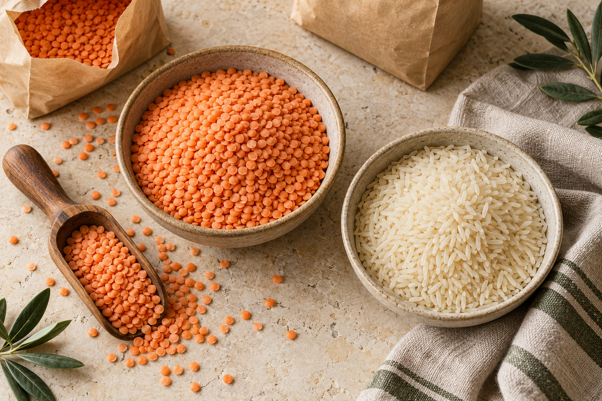

The everyday pantry
Good things
start with staples.
Rice, pulses and the ingredients you reach for. Find your shelf, read the details, choose your pack.
Explore pantry shelves
Stock the shelf
A little everyday order.

Explore the ingredients, pack sizes and preparation notes behind each staple.